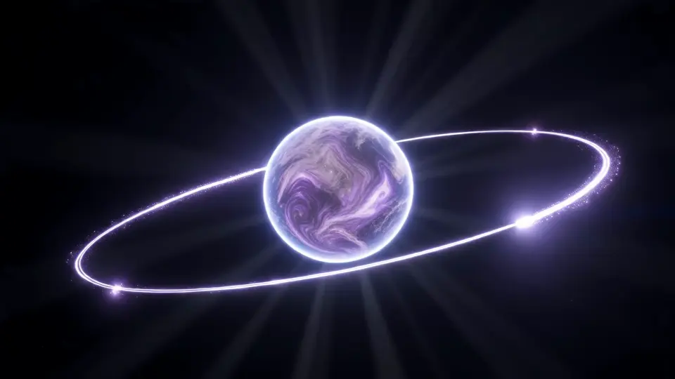

Phase
T-minus 04:00
Propellant load complete
Tanks topped off, all 23 flight controllers polled, and the weather officer called the upper winds acceptable.
Earth to L2
T-04:00:00Mission elapsed time
0 kmFrom Earth
0.0 sOne-way signal time
Insertion burn at L2
0.0of 41 s
Burn armed.
Optical feed
Waiting for launch

- Sunshield0 of 5 layers
-
Instruments0 of 4 online
- Mid-infrared cameraoff
- Instrument 2off
- Instrument 3off
- Instrument 4off
Console handed over to science operations.
Day 214. Commissioning closed with 98% of the planned checks passed and the first public observing queue open. This is a sample mission: nothing here is live and no request leaves your browser.
Vesper-1 mission log (sample)
- T-minus 04:00. Propellant load complete. Tanks topped off, all 23 flight controllers polled, and the weather officer called the upper winds acceptable.
- T+00:31. Separation and first signal. Vesper-1 left the upper stage on schedule and the ground station at Kourou held its carrier for the full pass.
- Day 3. Sunshield fully deployed. Five layers unfurled over nine hours, with the cold side dropping below 60 kelvin by evening.
- Day 29. Insertion burn at L2. A 41-second burn placed the observatory on its halo orbit, 1.5 million km from Earth.
- Day 112. First light, all four instruments. The mid-infrared camera returned its first calibrated frame, a field of 3,000 faint galaxies.
- Day 214. Science operations begin. Commissioning closed with 98% of the planned checks passed and the first public observing queue opened.